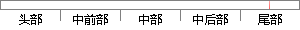

同时，我也要感谢浙江科技学院这个大学，感谢她给我提供了一个能够让我在大学四年中表现自己的一个平台。
片段位置图

相似结果|
相似片段 1：珍贵的数据为我的论文提供强大而有力的实践依据，谢谢你们，谢谢你们的帮助，谢谢你们的鼓励。其次我也要感谢大连海事大学，谢谢这所学校能够给我这样一个平台和机会，去做自己想做的事情。最后也要感谢各位评审老师和各位专家，感谢给予我的建议和帮助，你们为我指明了方向!
相似片段 2：的闲谈以及偶尔的游戏，让我的研究生活变得绚丽多彩，谢谢你们!在此我还要感谢我生活学习了九年的母校——中南大学，母校给了我一个宽阔的学习平台，让我不断吸取新知，充实自己。同时我也要感谢香港城市大学，给我提供
|
※ 片段修改建议 ※
近似词参考：- 感谢：感激 谢谢
- 感谢：感激 谢谢
- 提供：供给 供应
- 能够：可以或许
- 表现：表示 浮现 施展阐发 体现 显露 显示
- 自己：本身
系统自动生成语句：同时，我也要感激浙江科技学院这个大学，感激她给我供给了一个可以或许让我在大学四年中表示本身的一个平台。
注：本片段修改建议为系统自动生成，仅供参考。